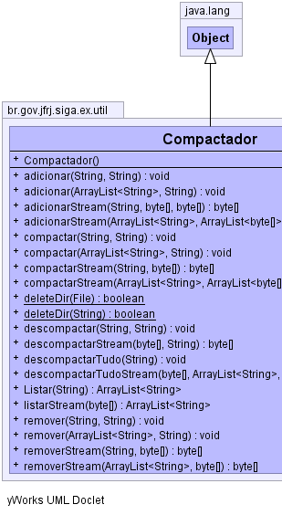
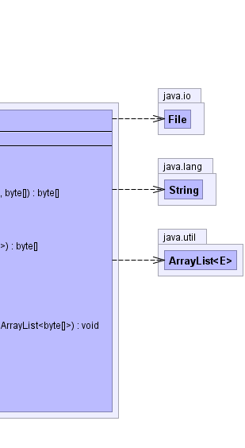

br.gov.jfrj.siga.ex.util.Compactador
br.gov.jfrj.siga.ex.util.Compactador
|
|||||||||
| PREV CLASS NEXT CLASS | FRAMES NO FRAMES | ||||||||
| SUMMARY: NESTED | FIELD | CONSTR | METHOD | DETAIL: FIELD | CONSTR | METHOD | ||||||||
java.lang.Object
public class Compactador
|  |  |
| Constructor Summary | |
|---|---|
Compactador()
|
|
| Method Summary | |
|---|---|
void |
adicionar(java.util.ArrayList<java.lang.String> arqEntrada,
java.lang.String zipSaida)
Adiciona arquivos novos a um arquivo compactado já existente |
void |
adicionar(java.lang.String arqEntrada,
java.lang.String zipSaida)
Adiciona um arquivo novo a um arquivo compactado já existente |
byte[] |
adicionarStream(java.util.ArrayList<java.lang.String> arqNome,
java.util.ArrayList<byte[]> arqEntrada,
byte[] zipEntrada)
Adiciona array de bytes a outro array de bytes compactado já existente |
byte[] |
adicionarStream(java.lang.String arqNome,
byte[] arqEntrada,
byte[] zipEntrada)
Adiciona um array de bytes a outro array de bytes compactado já existente |
void |
compactar(java.util.ArrayList<java.lang.String> arqEntrada,
java.lang.String zipSaida)
Compacta arquivos em um arquivo do tipo zip |
void |
compactar(java.lang.String arqEntrada,
java.lang.String zipSaida)
Compacta um arquivo em um arquivo do tipo zip |
byte[] |
compactarStream(java.util.ArrayList<java.lang.String> arqNome,
java.util.ArrayList<byte[]> arqEntrada)
Compacta arrays de bytes em um outro array de bytes |
byte[] |
compactarStream(java.lang.String arqNome,
byte[] arqEntrada)
Compacta um array de bytes em um outro array de bytes |
static boolean |
deleteDir(java.io.File dir)
Deleta o diretório informado e todos os arquivos e diretórios abaixo deste. |
static boolean |
deleteDir(java.lang.String filename)
Deleta o diretório informado e todos os arquivos e diretórios abaixo deste. |
void |
descompactar(java.lang.String zipEntrada,
java.lang.String arquivo)
Descompacta um arquivo de dentro do arquivo compactado já existente |
byte[] |
descompactarStream(byte[] zipEntrada,
java.lang.String arquivo)
Descompacta um array de bytes que está dentro do array de bytes compactado |
void |
descompactarTudo(java.lang.String zipEntrada)
Descompacta todos os arquivos |
void |
descompactarTudoStream(byte[] zipEntrada,
java.util.ArrayList<java.lang.String> nomes,
java.util.ArrayList<byte[]> aList)
Descompacta todos os arrays de bytes que estão dentro do array de bytes compactado |
java.util.ArrayList<java.lang.String> |
Listar(java.lang.String zipEntrada)
Lista todos os arquivos dentro do zip |
java.util.ArrayList<java.lang.String> |
listarStream(byte[] zipEntrada)
Lista todos os arrays de bytes que estão dentro do array de bytes compactado |
void |
remover(java.util.ArrayList<java.lang.String> arqRemover,
java.lang.String zipSaida)
Remove arquivos de um arquivo compactado já existente |
void |
remover(java.lang.String arqRemover,
java.lang.String zipSaida)
Remove um arquivo de um arquivo compactado já existente |
byte[] |
removerStream(java.util.ArrayList<java.lang.String> arqNome,
byte[] zipEntrada)
Remove arrays de bytes de dentro do array de bytes compactado |
byte[] |
removerStream(java.lang.String arqNome,
byte[] zipEntrada)
Remove um array de bytes de dentro do array de bytes compactado |
| Methods inherited from class java.lang.Object |
|---|
clone, equals, finalize, getClass, hashCode, notify, notifyAll, toString, wait, wait, wait |
| Constructor Detail |
|---|
public Compactador()
| Method Detail |
|---|
public static boolean deleteDir(java.lang.String filename)
filename - String - nome do diretório a ser apagado
public static boolean deleteDir(java.io.File dir)
dir - File - objeto File que representa o diretório a ser apagado
public void adicionar(java.lang.String arqEntrada,
java.lang.String zipSaida)
arqEntrada - -
String com o path do arquivo a ser adicionado. O path só pode
ser do diretório atual ou de subdiretórios do diretório atual.zipSaida - -
path do arquivo compactado já existente
public void adicionar(java.util.ArrayList<java.lang.String> arqEntrada,
java.lang.String zipSaida)
arqEntrada - -
ArrayList com o path dos arquivos a ser adicionados. Os paths
só podem ser do diretório atual ou de subdiretórios do
diretório atual.zipSaida - -
path do arquivo compactado já existente
public void remover(java.lang.String arqRemover,
java.lang.String zipSaida)
arqRemover - -
String com o path do arquivo a ser removido. O path só podem
ser do diretório atual ou de subdiretórios do diretório atual.zipSaida - -
path do arquivo compactado já existente
public void remover(java.util.ArrayList<java.lang.String> arqRemover,
java.lang.String zipSaida)
arqRemover - -
ArrayList com o path dos arquivos a ser removidos. Os paths só
podem ser do diretório atual ou de subdiretórios do diretório
atual.zipSaida - -
path do arquivo compactado já existente
public void compactar(java.lang.String arqEntrada,
java.lang.String zipSaida)
arqEntrada - -
String com o path do arquivo a ser compactado. O path só podem
ser do diretório atual ou de subdiretórios do diretório atual.zipSaida - -
path do arquivo compactado a ser criado
public void compactar(java.util.ArrayList<java.lang.String> arqEntrada,
java.lang.String zipSaida)
arqEntrada - -
ArrayList com o path dos arquivos a ser compactados. Os paths
só podem ser do diretório atual ou de subdiretórios do
diretório atual.zipSaida - -
path do arquivo compactado a ser criadopublic void descompactarTudo(java.lang.String zipEntrada)
zipSaida - -
path do arquivo compactado já existentepublic java.util.ArrayList<java.lang.String> Listar(java.lang.String zipEntrada)
zipSaida - -
path do arquivo compactado já existente
public void descompactar(java.lang.String zipEntrada,
java.lang.String arquivo)
arquivo - -
path do arquivo a ser descompactado.zipEntrada - -
path do arquivo compactado já existente
public byte[] adicionarStream(java.lang.String arqNome,
byte[] arqEntrada,
byte[] zipEntrada)
arqNome - -
String com o nome interno para referência dentro do array
compactado.arqEntrada - -
byte[] - array de bytes a ser adicionado.zipEntrada - -
Array de bytes compactado já existente.
public byte[] adicionarStream(java.util.ArrayList<java.lang.String> arqNome,
java.util.ArrayList<byte[]> arqEntrada,
byte[] zipEntrada)
arqNome - -
ArrayList com os nomes internos para referência dentro do
array compactado.arqEntrada - -
ArrayList com os arrays de bytes a ser adicionados.zipEntrada - -
Array de bytes compactado já existente.
public byte[] removerStream(java.lang.String arqNome,
byte[] zipEntrada)
arqNome - -
String com o nomes de referência dos array de bytes a ser
removidos.zipEntrada - -
Array de bytes compactado que contém o array a ser removidos.
public byte[] removerStream(java.util.ArrayList<java.lang.String> arqNome,
byte[] zipEntrada)
arqNome - -
ArrayList com os nomes de referência dos arrays de bytes a ser
removidos.zipEntrada - -
Array de bytes compactado que contém os arrays a ser
removidos.
public byte[] compactarStream(java.lang.String arqNome,
byte[] arqEntrada)
arqNome - -
String com o nome interno para referência dentro do array
compactado.arqEntrada - -
byte[] - array de bytes a ser compactado.
public byte[] compactarStream(java.util.ArrayList<java.lang.String> arqNome,
java.util.ArrayList<byte[]> arqEntrada)
arqNome - -
ArrayList com os nomes internos para referência dentro do
array compactado.arqEntrada - -
ArrayList com os arrays de bytes a ser adicionados.
public void descompactarTudoStream(byte[] zipEntrada,
java.util.ArrayList<java.lang.String> nomes,
java.util.ArrayList<byte[]> aList)
zipEntrada - -
array de bytes compactadonomes - -
ArrayList com os nomes internos de referência.public java.util.ArrayList<java.lang.String> listarStream(byte[] zipEntrada)
zipEntrada - -
array de bytes compactado
public byte[] descompactarStream(byte[] zipEntrada,
java.lang.String arquivo)
zipEntrada - -
array de bytes compactadoarquivo - -
Nome interno de referência do array de bytes a ser
descompactado.arqSaida - -
Array de bytes descompactado.
|
|||||||||
| PREV CLASS NEXT CLASS | FRAMES NO FRAMES | ||||||||
| SUMMARY: NESTED | FIELD | CONSTR | METHOD | DETAIL: FIELD | CONSTR | METHOD | ||||||||